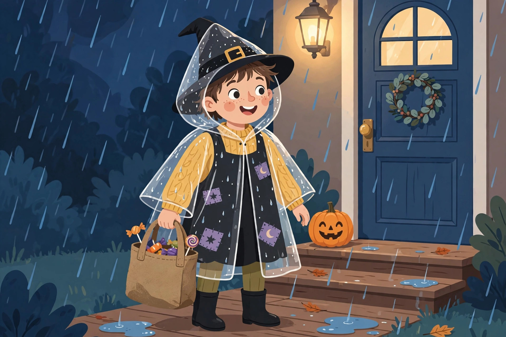

Weatherproofing Halloween costumes for cold Canadian nights

Every Canadian Halloween runs the same negotiation: the costume was chosen in September, and the weather gets a vote on October 31. That vote can be mild, but October in Canada can also mean 0°C, rain, or even snow — and a costume planned without the weather in mind may not last 20 minutes outdoors. Toronto's October normals explain the spread: daytime highs average about 14°C, but by the time trick-or-treating starts, temperatures are sliding toward the nightly average of about 6°C, and October still averages roughly 63 mm of rain across about 11 rainy days. The fix is not a warmer costume. It is a system: choose layers by the temperature band, build the costume around them, then weatherproof the whole outfit for the wet and the wind before anyone leaves the house.
Start with the temperature, not the costume
Most cold-costume advice gives one checklist for every night. A better approach is to check the evening forecast on October 30 and dress for the band it falls in. The bands below are a planning framework — the warmer the band, the more the work shifts from insulation to rain protection and visibility.
| Evening temperature | Layer plan | Route plan |
|---|---|---|
| Mild: 8°C and up | One light base layer under the costume; bring gloves for later | Full route is fine; watch for overheating indoors at parties |
| Cool: 3–7°C | Thermal base layer top and bottom; hat or wig layer; gloves | Full route with a warm-up break built in |
| Cold: −2 to 2°C | Full thermal base, mid-layer sized into the costume, warmers in pockets and shoes, closed warm footwear | Shorten the route; plan a midpoint stop at home or a warm car |
| Deep cold: below −2°C | Costume goes over real winter layers; face paint instead of a mask over a balaclava-style layer; every extremity covered | Short loops close to home, with an indoor finish (party, mall, or community event) as the main event |
Two habits make any band work better. First, decide the band the night before, not at the door — layers chosen in a rush get left behind. Second, treat wind and rain as a band colder: a wet 6°C evening steals heat faster than a dry 2°C one, because damp fabric stops insulating and starts conducting cold to the skin.
The layering comparison: under, over, and built-in
There are three places warmth can live in a costume, and each protects a different budget and a different look. Most good cold-night costumes combine two of the three.
| Strategy | How it works | Best for | Watch out for |
|---|---|---|---|
| Under: hidden base layers | Moisture-wicking thermal tops and leggings under the costume; neutral colours like black, white or brown stay invisible under most outfits, and tights or long underwear can be doubled | Fitted costumes where the silhouette is the whole point | Base layers alone run out of warmth in the cold band — they are a foundation, not the whole plan |
| Over: the costume wears the warmth | Buy or build the costume a size up so a coat or warm mid-layer fits underneath the costume's outer shell, or add a cloak or cape over the top — cloaks work over witches, vampires, knights, princesses and space characters alike | Kids who will refuse to cover the costume with a plain coat | Size-up costumes must still be short enough to prevent tripping, and hems need checking on stairs |
| Built-in: warm by design | Choose inherently warm forms — onesies and rompers carry built-in warmth, and loose cuts leave room for layers underneath | Anyone buying new; the simplest cold-night choice | Fewer character options; check that the fabric is still flame-resistant and the fit allows movement |
The under-layer deserves one more detail: it should be snug and dry. A thermal layer traps warmth only while it stays dry, which is why the weatherproofing procedure below matters as much as the layering itself. If sweat or rain soaks the base, the costume gets colder from the inside out.

The weatherproofing procedure (rain, snow, and wind)
Run this sequence on October 30 or the afternoon of the 31st. It takes about twenty minutes and covers the three ways Canadian Halloween weather ruins a night: wet fabric, cold extremities, and lost visibility.
- Check the forecast and pick the band. Use the table above. If rain is in the forecast at any probability that matters to you, plan for the wet version of the band, not the dry one.
- Lay out the full stack and try it on. Base layer, mid-layer, costume, footwear, hat — all together, indoors, with a walk up and down stairs. Check that the costume still fits over the layers, that hems clear the floor, and that the wearer can sit, climb, and use the bathroom without a full undress.
- Add the rain shell. A clear poncho or a cape keeps rain off while leaving the costume visible underneath. Test it over the full stack — ponchos that fit a bare costume bind over a layered one. Treat the treat bag too: a bag that soaks through ruins the haul, so choose a sturdy bag that can be carried comfortably for an hour and keep a spare dry bag in a pocket.
- Seal the extremities. Activate disposable hand and foot warmers before heading out — foot warmers go into shoes about 30 minutes before trick-or-treating so the warmth is there from the first step. Long gloves cover the wrist gap between sleeve and hand, and a hat hidden inside a large wig, or a hat restyled as part of the costume, covers the head without breaking the look.
- Restore visibility. Layers and ponchos can cover the reflective parts of a costume. Re-check from the street side: reflective or LED glow bands on the outermost layer, a flashlight in hand, and light colours wherever the costume allows. It gets dark early, and drivers see the outermost layer, not the costume underneath.
- Do the doorstep test. Stand outside for five minutes in the full stack before the group leaves. Cold ankles, a slipping hat, or a poncho that flaps open in wind are all fixable at home and miserable at the far end of the route.
Hands, feet, and heads: where the cold actually gets in
Costumes cover torsos well and extremities badly, which is backwards for comfort. Hands cool first because they are out in the air holding a bag; the warmers-in-pockets trick works because hands return to the pockets between houses. Feet cool through thin costume shoes on cold pavement, so footwear matters more than one more chest layer — shoes should fit properly even when they do not perfectly match the costume, and closed, dry footwear beats a character-perfect shoe that soaks through at the first puddle. Heads are the easiest win: turning winter gear into costume accessories — a warm hat restyled as a witch's cap or a character hood, gloves decorated to read as claws or robot hands, a scarf worn as a shawl or cloak — keeps the warmth and the look at the same time. For the coldest band, battery-powered heated inserts made for outdoor activities exist as a buy-once option, and reusable warmers that charge by USB avoid a fresh pack of disposables every year.
Visibility and flame safety still apply when it is cold
Cold-weather fixes create two safety traps. The first is darkness: bulkier, darker winter layers can erase a bright costume, so rebuild visibility on the outside — light-coloured, flame-resistant costume pieces with reflective strips, plus tape or bands on anything carried. The second is flame: layered costumes drift toward candles and jack-o'-lanterns on porches, and costumes can be highly flammable, so keep clear of open flames and choose flameless LED candles at home — real candles blow out in the wind anyway, which makes the safe choice also the practical one. Fit still rules: properly fitted costumes reduce tripping, face paint beats a mask that restricts vision on dark stairs, and every layer added is one more reason to re-run the stair test from step 2.
FAQ
Should the coat go over or under the costume? Under, whenever the costume allows it: buy a size up or choose a loose cut so the coat disappears into the outfit. A cloak or cape over the top is the fallback that still reads as costume. A plain coat over everything is the last resort — warm, but the costume effectively ends at the front door.
What if the forecast flips at the last minute? Pack the band above and the band below: warmers, gloves and a clear poncho weigh almost nothing in a parent's bag and cover a five-degree swing in either direction. Canadian Halloweens have delivered record warmth and early snow; the bag is cheaper than the argument.
How long can kids stay out in the cold band? Plan the route, not the clock: short loops with a warm midpoint beat one long march. When fingers stay cold despite warmers, or the base layer is wet, the night is done — finish indoors with the candy sort and a party rather than one more street.
Keep readingNext: DIY costumes from stuff you already own →